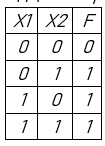
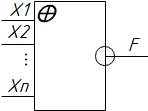

Раздел 1. Алгебра логики.
План:
Дизъюнкция.
Конъюнкция.
Инверсия.
Стрелка Пирса.
Штрих Шеффера.
Сложение по модулю 2.
Эквивалентность.
Дизъюнкция.
В булевой алгебре имеются три основных функции:
1. Дизъюнкция.
2. Конъюнкция.
3. Инверсия.
Дизъюнкция:
Дизъюнкция – это логическое сложение. Операция «ИЛИ»
Дизъюнкция имеет следующий вид: F=Х1VХ2 (V – или)
Дизъюнкция принимает значение единицы (истины), если хотя бы одна переменная равна единице, а если все переменные равны нулю (ложь), то и результат дизъюнкции равен нулю.
По этому определению составляем таблицу истинности и чертим логическую схему.
Таблица истинности – это зависимость функции от аргументов.
В таблице истинности количество столбцов равно количество аргументов + количество функций.
22 =4 ( 2 – число аргументов)
если два аргумента то восемь строчек, если четыре аргумента то шестнадцать строчек.

Х1, Х2, Хn –это входы.
F – это выход.
При этом входов может быть много, но минимум два.
Конъюнкция
Конъюнкция- это логическое умножение. Операция «И».
Имеет вид F=X1&X2 (&- амперсант).
Конъюнкция принимает значение единицы (истина), если все переменные равны единице.
А если хотя бы одна переменная равна нулю, то и конъюнкция будет равна нулю.
По данному определению составляем таблицу истинности и чертим логическую схему.
Х1, Х2, Хn –это входы.
F – это выход.
При этом входов может быть много, но минимум два.
Инверсия.
Инверсия – это логическое отрицание. Операция «НЕ».
Имеет следующий вид : F=X ̅ (F= НЕ Х) (F=инверсия от Х).
Инверсия принимает значение единицы, если аргумент равен нулю.
Инверсия принимает значение нуля, если аргумент равен единице.
По данному определению составляем таблицу истинности и чертим логическую схему.
В данной схеме только один вход.
Х- вход, F – выход.
Стрелка Пирса.
Стрелка Пирса – операция обратная от дизъюнкции. «ИЛИ – НЕ»
Имеет следующий вид: F=X1↓X2 = (X1VX2) ̅ (Не Х1, не Х2).
Стрелка Пирса принимает значение нуля, если хотя бы одна переменная равна единице; Если все переменные равны нулю, то результат операции стрелка Пирса равна единице.
По данному определению составляем таблицу истинности и чертим логическую схему.
Х1, Х2, Хn –это входы.
F – это выход.
При этом входов может быть много, но минимум два.
Штрих Шеффера.
Штрих Шеффера- операция обратная от Конъюнкции. «И-НЕ».
Имеет следующий вид F=X1|X2=(X1&X2) ̅.
Штрих Шеффера принимает значение единицы, если хотя бы одна переменная равна нулю. Если все переменные равны единице, то результат Штриха Шеффера равен нулю.
По данному определению составляем таблицу истинности и чертим логическую схему.
Х1, Х2, Хn –это входы.
F – это выход.
При этом входов может быть много, но минимум два.
Сложение по модулю 2.
Сложение по модулю 2. «Исключающее ИЛИ».
Имеет следующий вид: F=X1⊕X2.
Сложение по модулю 2 принимает значение нуля, если обе переменные равны между собой. Если переменные различны, то результат сложения по модулю 2 равен единице.
По данному определению составляем таблицу истинности и чертим логическую схему.
Х1, Х2, Хn –это входы.
F – это выход.
При этом входов может быть много, но минимум два.
Эквивалентность.
Эквивалентность (Эквиваленция)- операция обратная от сложения по модулю 2.
Имеет следующий вид: F=X1 ↔X2 «X1 Эквивалентно Х2».
Эквивалентность принимает значение единицы, если оба аргумента равны между собой.
Если аргументы различны, то результат эквивалентности равен нулю.
По данному определению составляем таблицу истинности и чертим логическую схему.
Х1, Х2, Хn –это входы.
F – это выход.
При этом входов может быть много, но минимум два.
